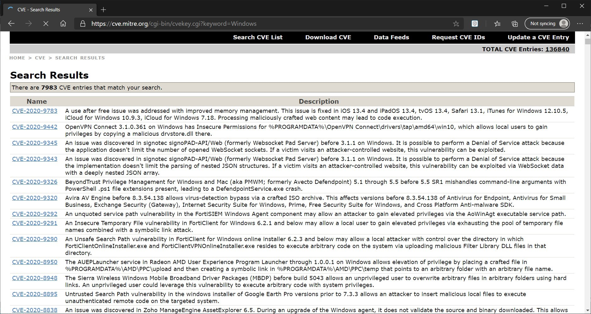
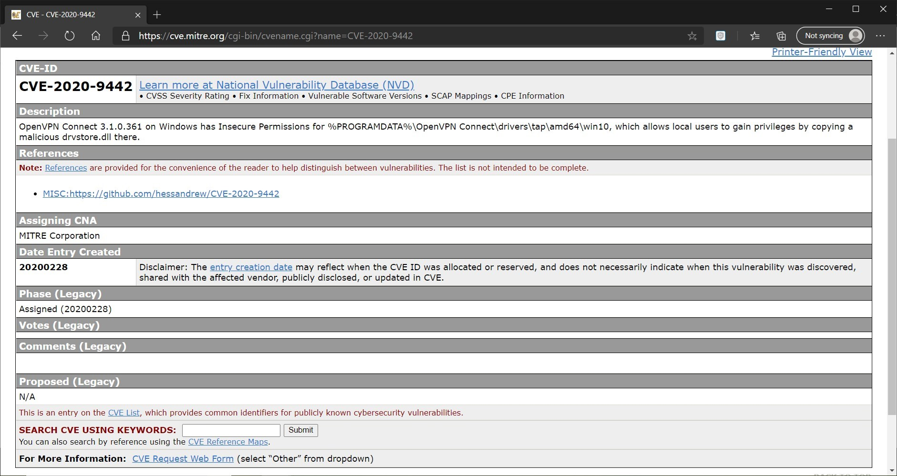
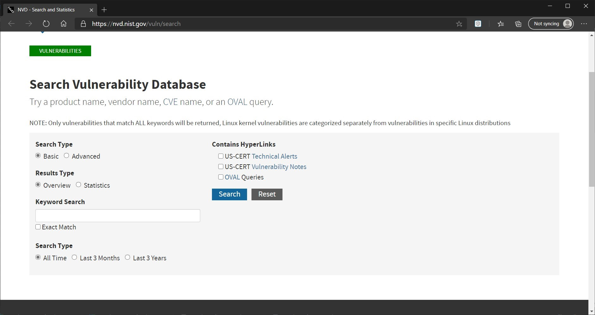
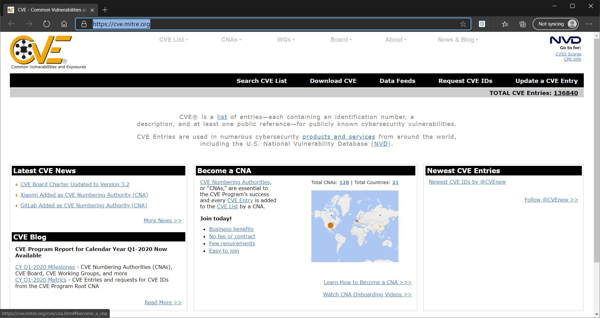
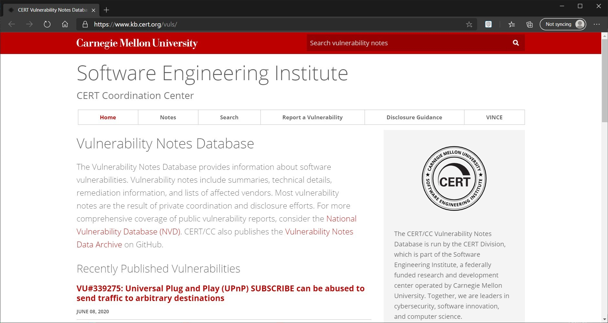
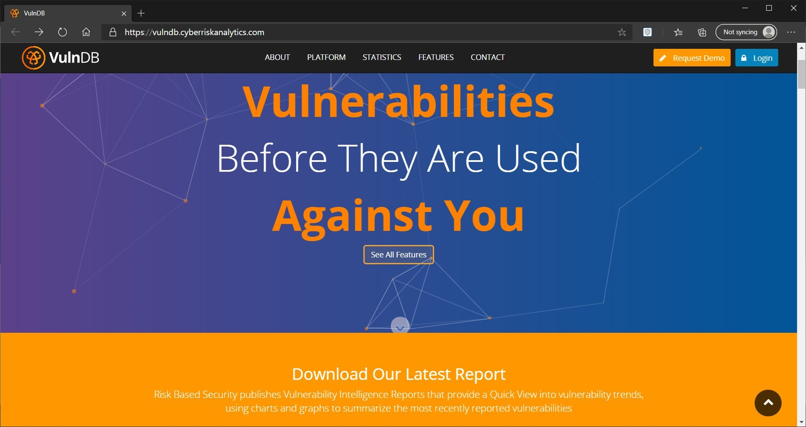
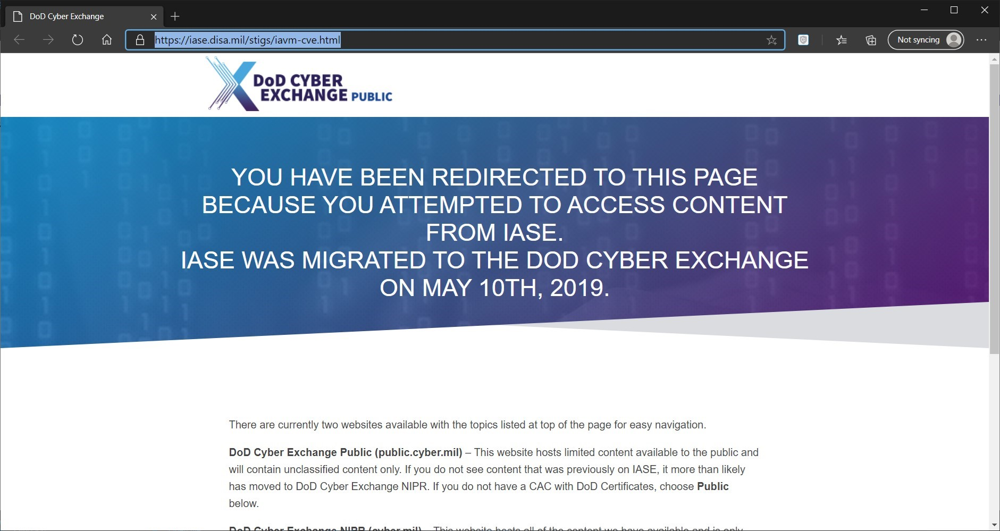
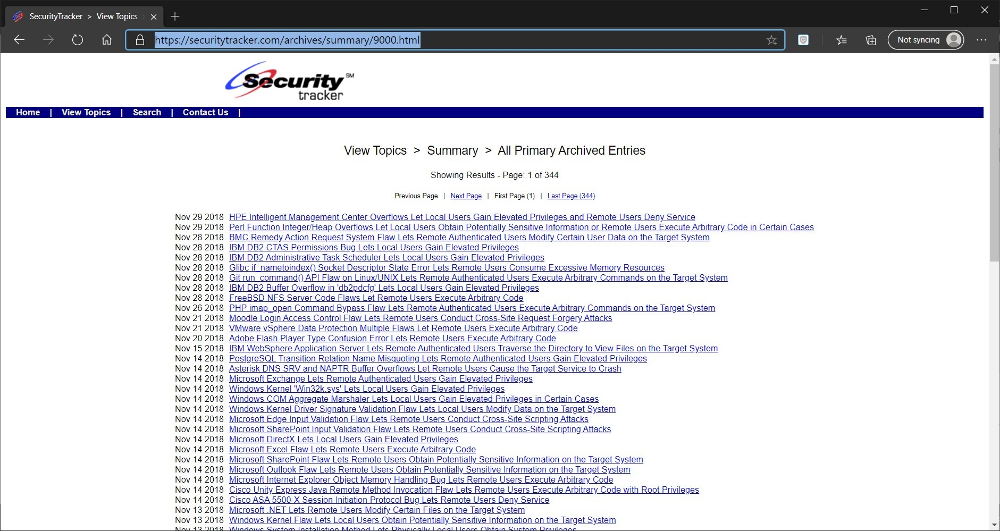
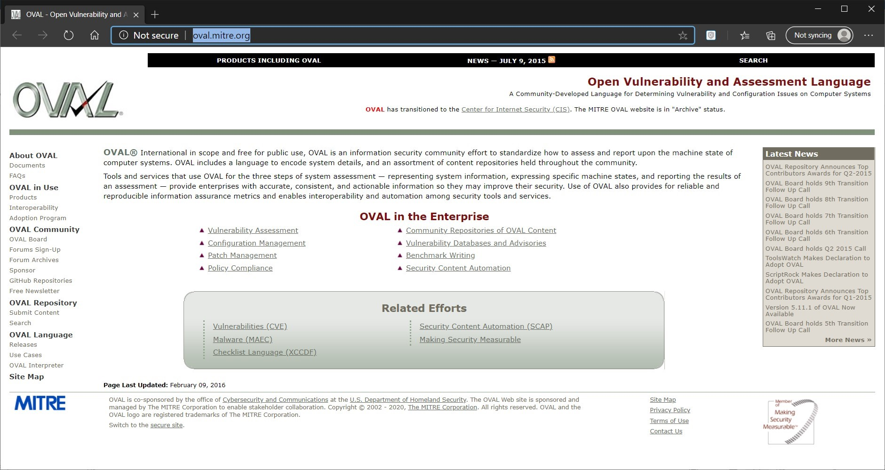
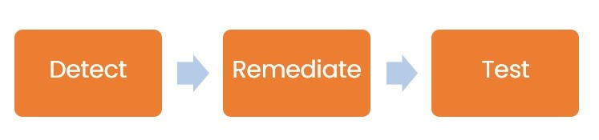

Introduction
9beca326-b493-4b0e-b3dc-d7dfb77df3c9
Welcome to the Types of Scanning Practice Lab. In this module, you will be provided with the instructions and devices needed to develop your hands-on skills.
dc640c20-9434-45ea-b7c2-6d4d6a196bfc
Learning Outcomes
In this module, you will complete the following exercises:
- Exercise 1 - Scanning Parameters and Criteria
After completing this module, you will have further knowledge of:
- Risks Associated with Scanning Activities
- Vulnerability Feeds
- Scope
- Credentialed vs. Non-Credentialed
- Server-Based vs. Agent-Based
- Internal vs. External Scanning
- Special Considerations
Exam Objectives
The following exam objectives are covered in this lab:
- 1.3 Given a Scenario, Perform Vulnerability Management Activities
Note: Our main
focus is to cover the practical, hands-on aspects of the exam
objectives. We recommend referring to course material or a search engine
to research theoretical topics in more detail.
Lab Duration
It will take approximately 30 minutes to complete this lab.
89816a20-56f2-42c5-bfa0-46f11f2986ba
Help and Support
For more information on using Practice Labs, please see our Help and Support page. You can also raise a technical support ticket from this page.
Click Next to view the Lab topology used in this module.
d2c53300-f951-45a9-9aa4-3d4ecae69e11
Lab Topology
This lab contains supporting materials for CySA+.

Click Next to proceed to the first exercise.
<
Home |
README >
CompTIA Cybersecurity Analyst (CySA+) Practice Labs
Exercise 1 - Scanning Parameters and Criteria
Before you start with vulnerability scanning, there are
several factors that you have to think about. You have to define the
scope of the vulnerability scan. You have to also think about the kind
of vulnerability scanning that needs to be performed. For example, it
could be that you are going to perform agent-based vulnerability
scanning. You have to keep several considerations in mind before you
take a step forward to perform vulnerability scanning.
In this exercise, you will learn about various scanning parameters and criteria.
Learning Outcomes
After completing this exercise, you will have further knowledge of:
- Risks Associated with Scanning Activities
- Vulnerability Feeds
- Scope
- Credentialed vs. Non-Credentialed
- Server-Based vs. Agent-Based
- Internal vs. External Scanning
- Special Considerations
Risks Associated With Scanning Activities
Even though vulnerability scanning has the intent of
finding vulnerabilities, it also has certain risks associated with it.
Vulnerability scanning must be scoped out correctly. Even though
vulnerability scanning is easy to perform and is done through automated
tools, you will still come across several hurdles that need to be dealt
with. Some of the common hurdles include:
- Network Bandwidth Consumption: Depending on the
type of vulnerability scan you perform, it may be a possibility that a
lot of network bandwidth will get consumed. You have to correctly choose
the type of vulnerability scan if there is limited network bandwidth.
For example, if you have a remote location with limited bandwidth, it is
good to perform an agent-based vulnerability scan.
- Business Process Interruption: You need to be
aware of the type of business processes that are running. While running a
vulnerability scan on a server or Web application, it may be possible
that there is a business process interruption. For example, the server
may get busy in vulnerability scanning, and therefore, resources are
unavailable for other uses.
- Operational Schedules: While planning a
vulnerability scan, you need to be aware of the operational schedules.
The vulnerability scan must not interfere with the servers and Web
applications during the operational time. Therefore, you need to find
time when the servers and Web applications will be in an idle state.
- Correct Scoping: There is a possibility that
you may want to scan the entire infrastructure. However, it may not be
required. Therefore, you have to carefully scope out the vulnerability
scan. If you want to scan the entire infrastructure, then do it in
phases. You should scan critical assets first and then scan the others
in phases.
Vulnerability Feed
It is a difficult task for an individual or an
organization to keep up with the discovered vulnerabilities. An
individual or the organization would be most concerned with
vulnerabilities of applications or operating systems that they are
using. However, it is difficult to keep abreast of the vulnerabilities
of even a limited number of applications or operating systems.
For example, let’s assume that a new vulnerability has
been discovered in Windows Server, but you are unaware of it. You have
several Windows Server systems that are exposed to the Internet. In such
a scenario, these systems are likely to be compromised if the
vulnerability is not patched. Therefore, the organizations or even the
individuals should keep up with the vulnerabilities as and when they are
discovered.
Vulnerability feeds are a good method to get the latest information about vulnerabilities. Vulnerability feeds are Simple Syndication (RSS) feeds that deliver the information once you subscribe to them. For example, mitre.org has a list of vulnerabilities on Windows:
Figure
1.1 Diagram showing a list of vulnerabilities: Showing the list of
vulnerabilities for Windows and Windows-based applications.
When you click on a vulnerability, you can get much information. For example, on mitre.org, you can view a vulnerability by simply clicking on it.
Figure 1.2 Diagram showing a vulnerability: Showing a detailed description of vulnerability on mitre.org.
Various Websites provide vulnerability feeds. Some of the key ones are listed below:
NIST URL:
https://nvd.nist.gov/vuln/search
Figure 1.3 Diagram showing the NIST portal: Showing the options to search for vulnerabilities on the NIST portal.
Mitre URL:
https://cve.mitre.org/
Figure 1.4 Diagram showing the Mitre portal: Showing the homepage of the Mitre portal.
CERT URL:
https://www.kb.cert.org/vuls/
Figure 1.5 Diagram showing the CERT portal: Showing the homepage of the CERT portal.
VulnDB URL:
https://vulndb.cyberriskanalytics.com/
Figure 1.6 Diagram showing the VulnDB portal: Showing the homepage of the VulnDB portal.
DISA URL:
https://iase.disa.mil/stigs/iavm-cve.html
Figure 1.7 Diagram showing the DISA portal: Showing the homepage of the DISA portal.
SecurityTracker URL:
https://securitytracker.com/archives/summary/9000.html
Figure 1.8 Diagram showing the SecurityTracker page: Showing the list of vulnerabilities on the SecurityTracker portal.
OVAL URL:
http://oval.mitre.org/
Figure 1.9 Diagram showing the OVAL portal: Showing the homepage of the OVAL portal.
Scope
Before performing a vulnerability scan, you need to define:
- The type of scan that you can perform
- The assets that you can scan
- Time of the scan
It is critical to define the scope of a vulnerability
scan. Without defining the scope, you may end up scanning devices or
applications that you should not be scanning. For example, you may scan
an application that is owned by a third party. Or, you may end up
scanning a hardware device that is not in your direct control and is
owned by the third party.
Defining the scope limits the vulnerability scan to
focus on specific applications or devices on the network. With the
scope, you also get limited results, which will be easy to view.
Credentialed vs. Non-Credentialed
After you have defined the scope of the vulnerability
scanning, you also need to decide whether you will be performing a
credentialed or non-credentialed scan. Depending on your requirement,
you can choose either one. There are advantages and disadvantages to
using both of them.
- Credentialed Scan: To run a credentialed scan,
you need to have the administrative account and use it during the scan. A
vulnerability scanner using the administrative credentials can probe
deeper into the network and the applications.
- Non-Credentialzed Scan: There are no
credentials required for this type of vulnerability scan. There is a
limited amount of scanning that can be done by the non-credentialed scan
because it cannot scan deeper into the applications or systems that
require credentialed access. It is mainly focused on finding the open
ports and the services or software that are using the ports.
Server-based vs. Agent-based
There are two types of vulnerability scanners. The
first type is the one that uses agents, and the second one is the type
that does not use agents, which means that the scanners are agentless
and are known as server-based.
- Agent-based: An agent is installed on the
systems that need to be scanned by the vulnerability scanner. The agents
use the push technology to push the information to the server.
Agent-based vulnerability scanners are good for locations that have
limited bandwidth. Some policies are defined on the centralized server
for the agents based on which they perform the scanning.
- Server-based: This type of vulnerability
scanners do not use an agent and use the pull technology to pull
information from the systems that need to be scanned. The server-based
vulnerability scanners are good for locations that have a good amount of
bandwidth. There is a centralized server that controls the scanning
part and presents the information in the reports, which can be generated
or viewed on the server.
Internal vs. External
A vulnerability scan can be either internal or
external to an organization. When it is external to an organization, it
means that the vulnerability scan is executed from outside of a network.
Its main purpose is to scan the perimeter defense and find the
vulnerability. Some of the key security devices that you would scan are
firewalls, edge router, or even the Web Application Firewall (WAF).
An internal vulnerability scan is carried out within
the network, which means that you are running a scan while you are
connected to the network. The key intent is to try to penetrate the
perimeter network and also the network devices and services.
Special Considerations
When running a vulnerability scan, several
considerations will require your attention. Some of the key
considerations are listed below.
Types of data
Vulnerability scanners can scan through a vast variety
of data. However, you need to be aware that the more types of data you
include in the scan, the more time consuming the scan becomes, and you
may also end up with the irrelevant results. Therefore, you must
carefully select the type of data that you want to scan. With the
filtered data types, you will get more relevant results, and scans are
faster in generating the results.
Technical constraints
When running a vulnerability scan, there can be several technical constraints. Some of the key constraints are:
- Licensing restrictions: Depending on the type
of product that you are using, you may have restrictions on running
several scans per day or within a given period.
- Several target assets: There may be a limitation on the number of target assets that you can scan.
- Availability of resources or assets: There can
be a possibility that a certain set of assets or resources are not
available at the time of the scan. For example, a live Web server may
not be available for scanning.
Workflow
There can be possibilities that a discovered
vulnerability may disrupt business operations because of its high
severity. You also need to get the development team, the network team,
and the security teams involved in fixing the vulnerability. The idle
workflow needs to follow these steps:
Figure
1.10 Diagram showing the Vulnerability Scan workflow: Showing the three
main steps in the vulnerability scan workflow which are Detect >
Remediate > Test.
First, you need to run the vulnerability scan to
detect the vulnerabilities. Then, you need to remediate the
vulnerabilities, and finally, test whether the vulnerabilities are
closed.
In this workflow, you need to ensure that there is
minimal impact on business operations. Therefore, to be able to do this,
the organization may decide on the frequency of the vulnerability scan
to be half-yearly or maybe yearly.
Sensitivity levels
Vulnerability tools typically have sensitivity levels.
However, it may be possible that as per your network architecture,
vulnerability is not defined with the correct sensitivity level.
There can also be the possibility that vulnerability
is a false alarm. Therefore, you must review each vulnerability that is
discovered. The sensitivity level is about how deep a system is probed
in the vulnerability scan. A scan can be performed at the top-level to
discover the assets that exist on the network. Such a scan is known as a
discovery scan.
The second type of scan is the assessment scan in
which the actual vulnerability scanning takes place. It performs an
in-depth scan of the systems and applications and can locate the
vulnerabilities.
Regulatory requirements
There can be a possibility that your organization is complying with a specific regulation, such as PCI-DSS. In such a case, the frequency of the vulnerability scan will be determined by PCI-DSS, which requires a quarterly scan.
Other regulatory requirements, such as FISMA, also mandates a specific frequency of the vulnerability scan. Some regulations, such as HIPAA, do not mandate the requirement of a vulnerability scan.
It is also possible that an internal security policy
mandates the vulnerability scan to be run at a specific frequency. Such a
requirement is common amongst several organizations.
Segmentation
Most organizations will break their large networks
into several segments. Each segment will be running a specific type of
resource. For example, a particular segment may be running only the
desktops.
On the other hand, another segment may be running on the servers.
When planning the vulnerability scan, you must scope
all required segments and consider the segments that need to be included
in the vulnerability scan. There can also be the possibility that a
segment with a critical Web server is isolated from the network. You
also need to include this particular segment into the vulnerability
scan, and therefore, you must plan accordingly.
Intrusion Prevention System (IPS), Intrusion Detection System (IDS), and Firewall
Several organizations deploy active protection and detection security controls, such as:
- Intrusion Prevention System (IPS)
- Intrusion Detection System (IDS)
- Web Application Firewall
- Firewalls
When running a vulnerability scan, these active
protection and detection security controls may raise a false alarm
during the vulnerability scan. You should attempt to avoid any kind of
interference with these security controls during the vulnerability scan.
dc2a295a-ab17-4b52-8e1c-80389d10a470
86b3caf2-2504-4e20-a81b-2fcb2368c8d2
Review
Well done, you have completed the Types of Scanning Practice Lab.
2abaca70-efa1-4fe5-94fb-ad1777bfc242
6541732a-9c1b-48f1-89bb-e3814b3c47f4
a7f02443-6c67-41b4-b1a3-99b4efab9137
8124f09d-7483-430c-bec2-50cf99c7ba03
c8ab30dd-0b7b-44ac-befb-2e4e35292d9e
ac56db9d-c89f-42ec-85d6-b5b4bea07f66
aaaaaaaa-1111-1111-1111-193f35a24fe3
Summary
You completed the following exercises:
- Exercise 1 - Scanning Parameters and Criteria
You should now have further knowledge of:
- Risks Associated with Scanning Activities
- Vulnerability Feeds
- Scope
- Credentialed vs. Non-Credentialed
- Server-Based vs. Agent-Based
- Internal vs. External Scanning
- Special Considerations
Feedback
067744a4-4299-4662-b5be-04dbb636a007